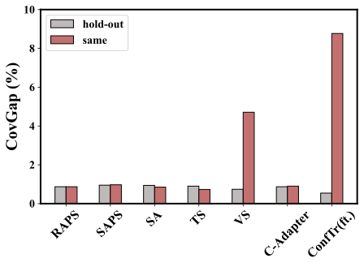

Separate data
Tuning setChoose score parameters→Calibration setSet the quantile
The score is fixed before calibration.
¹ Southern University of Science and Technology² University of Macau
Conformal prediction is a popular framework of uncertainty quantification that constructs prediction sets with coverage guarantees. To uphold the exchangeability assumption, many conformal prediction methods necessitate an additional hold-out set for parameter tuning. Yet, the impact of violating this principle on coverage remains underexplored, making it ambiguous in practical applications. In this work, we empirically find that the tuning bias - the coverage gap introduced by leveraging the same dataset for tuning and calibration, is negligible for simple parameter tuning in many conformal prediction methods. In particular, we observe the scaling law of the tuning bias: this bias increases with parameter space complexity and decreases with calibration set size. Formally, we establish a theoretical framework to quantify the tuning bias and provide rigorous proof for the scaling law of the tuning bias by deriving its upper bound. In the end, we discuss how to reduce the tuning bias, guided by the theories we developed.
01 / The question
Split conformal prediction turns a model’s scores into prediction sets. If the score has parameters to tune, the usual approach uses a separate hold-out set. Reusing calibration data saves a split, but makes the tuned score depend on the data used to set its threshold.
Separate data
The score is fixed before calibration.
Reuse the same data
The score and threshold both depend on the shared set.
Definition 2.3 / Tuning bias
Here \(\operatorname{CovGap}(\mathcal C)=|(1-\alpha)-\mathbb P\{Y\in\mathcal C(X)\}|\). Tuning bias is the difference between two coverage gaps, rather than the error rate of the classifier or the gap of a single method.

02 / Explore the law
Theory connects tuning bias to a uniform empirical-process bound over the family of thresholded scores. Explore a finite-candidate bound or the shape of the parametric rate.
Selected complexityReference complexity
Proposition 4.2: M is the number of fixed candidate score functions; n is the calibration size. This is a theoretical upper bound, not a measured bias.
The paper’s general framework uses the class \(\mathcal H_\Lambda=\{\mathbf 1\{S^\lambda(x,y)\leq t\}:\lambda\in\Lambda,t\in\mathbb R\}\). The finite-candidate result accounts for all thresholds within each candidate.
Proposition 4.6 presents a parametric rate \(C\sqrt{(d+1)/n}\). The explorer displays its relative shape, without choosing the unknown constant \(C\). Interpreting dimension as a complexity measure requires control of the thresholded score class for the family under study; a parameter count alone does not describe an arbitrary score family.
Read Section 4 and the proofs ↗03 / The evidence
Figure 2 varies one factor at a time: the number of tunable parameters or the amount of calibration data. Both experiments use vector scaling with APS on ImageNet.
Source: Figure 2 and the authors’ plotting data, checked against the published vector curves. Values are means ± standard deviations (SD) over 30 runs. Bands show variability, not confidence intervals; negative lower band endpoints are clipped at zero.
| Parameters | Same data (%) | Hold-out (%) | Difference (pp) |
|---|
04 / In practice
The paper studies two ways to limit tuning complexity: weight sharing, as in temperature scaling, and an order-preserving (OP) constraint for ConfTr.
Source: Table 1, APS score. Values are tuning bias in percentage points, reported as mean ± SD. The two datasets use different calibration sizes; compare methods within each dataset.
| Method | CIFAR-100 | ImageNet |
|---|
Temperature scaling uses one shared temperature, while vector scaling uses class-specific parameters. Their observed tuning biases differ sharply in Table 1.
ConfTr with the OP constraint has smaller reported bias than unconstrained ConfTr. These results motivate tuning methods that keep useful prediction structure.
These experiments study data reuse in the paper’s setting. A small observed bias is useful evidence, but does not by itself certify coverage for a new model or dataset.
Read & build
@InProceedings{pmlr-v267-zeng25e,
title = {Parametric Scaling Law of Tuning Bias in Conformal Prediction},
author = {Zeng, Hao and Liu, Kangdao and Jing, Bingyi and Wei, Hongxin},
booktitle = {Proceedings of the 42nd International Conference on Machine Learning},
pages = {74133--74156},
year = {2025},
volume = {267},
series = {Proceedings of Machine Learning Research},
publisher = {PMLR},
url = {https://proceedings.mlr.press/v267/zeng25e.html}
}